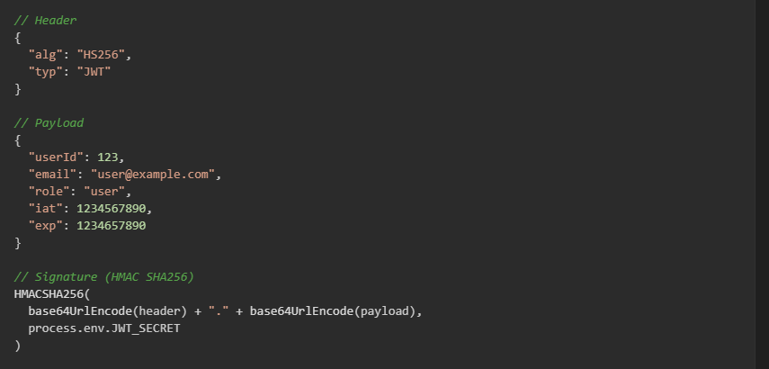
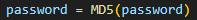
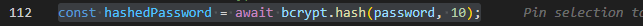
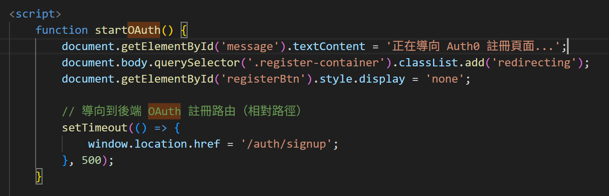
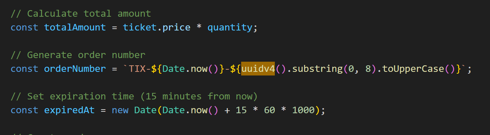
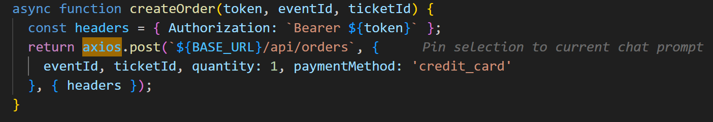
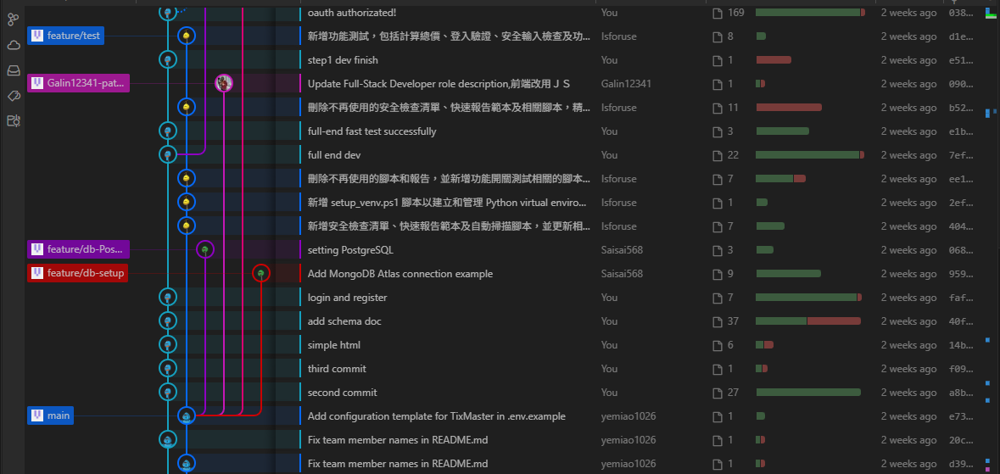
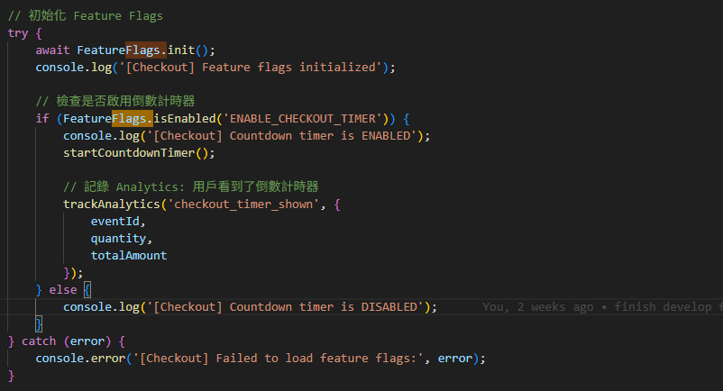
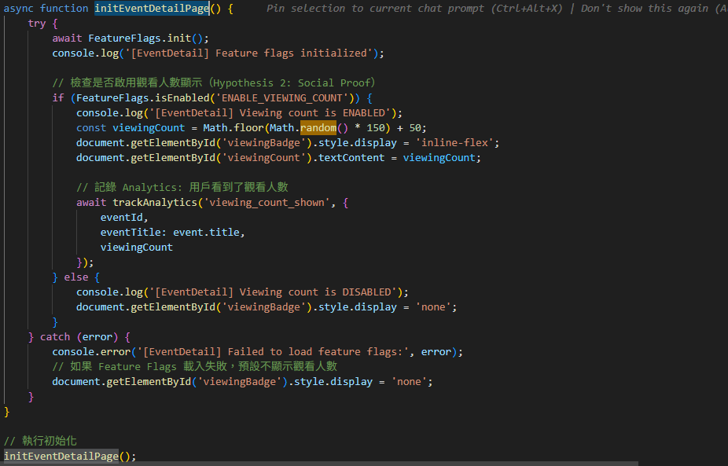

// Advantages
- Blocking non-I/O, suitable for high-concurrency ticketing scenarios
- JavaScript is consistent across all platforms, reducing the learning curve
- Large npm ecosystem with abundant packages
- Lightweight, quick start-up
Use Cases:
RESTful API server
Middleware architecture
Request routing and processing
backend/server.js:25)
JWT (jsonwebtoken)
Version: 9.0.2
Why using:
// ✅ JWT Advantages
- Stateless authentication, suitable for distributed systems
- No need for session storage, reducing server memory burden
- CORS-friendly
- Can carry user role and permission information
Use Cases:
Generating tokens after user login
API request verification
Administrator permission verification

Bcrypt (But we remove it.)


Note: Cause for the clearly structure. We remove it in the current version
OAuth

Note: Then, we use open authorization to replace our native custom login system
CORS (cors)
Version: 2.8.5
Why Choose:
// Problem: Frontend is at localhost:5500, backend is at localhost:3000
// Browsers will block cross-origin requests (Same-Origin Policy)
// Solution: CORS middleware
const corsOptions = {
origin: process.env.FRONTEND_URL || true,
credentials: true // Allow cookies
};
app.use(cors(corsOptions));
Use Cases:
Allow frontends to make cross-domain requests to backend APIs
Control which domains can access the API
Handle preflight requests (OPTIONS)
uuidv4
Advantages:
Globally unique (extremely low probability of collision)
Unpredictable (security)
Decentralized system friendly (no central ID generator required)
Use Cases:
Order number
Correlation ID (request tracking)
Session Token

Axios
Version: 1.7.9
Axios is a Promise-based HTTP client used to send HTTP requests in browsers and Node.js. Simply put, Axios is a tool for communicating with backend APIs.
Why Choose:
// ✅ Advantages of axios
- Supports Promise (async/await)
- Automatic JSON conversion
- Interceptor functionality
- Compatible with browsers and Node.js
- Request/response transformation
- Improved error handling

dotenv
Version: 16.3.1
Why Choose:
// ❌ Incorrect Practice (Hardcoding Confidential Information)
const JWT_SECRET = "my-super-secret-key"; // Commit to Git!
// ✅ Correct Practice (Using Environment Variables)
require('dotenv').config();
const JWT_SECRET = process.env.JWT_SECRET;
Advantages:
12-Factor App Standard Practice
Separate Environment Configuration (dev/staging/prod)
Prevent Confidential Information Leakage
Deployment Platform Friendly
Use Cases:
Repository Connection Strings
JWT Keys
OAuth Credentials
Third-Party API Keys
Branch
Due to a lack of experience, our branching strategy was quite chaotic. However, we will still protect the main branch, doing development on the dev branch and testing on the test branch.

Toggle


Toggle
Integration method:
When the event details page (event-detail.html) is loaded, the front end will first check the status of the Feature Flag and then decide which UI element to render.
ENABLE_CHECKOUT_TIMER = ON (顯示 15:00 倒數紅條)
觀看人數 UI 證據：
ENABLE_VIEWING_COUNT = ON (顯示「84 人正在瀏覽」)
ENABLE_VIEWING_COUNT = OFF (無觀看人數提示)